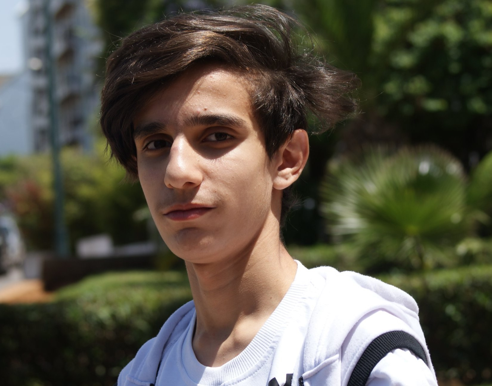

Personnels
Nom :
Oussama Rafi
Adresse
21 rue des Majots
numero telephone :
+33 766370904
|
Profile
Actuellement en premiere année en licence informatique à l'upjv je suis passionné par le domaine dinformatique je mevertue d'acquerir un maximum de connaissance dans ce domaine je suis tres active dans la vie associative, je suis sociable, serieux, rigoureux et bien organisé
Competences
Edition Video
Techniques de Photographie
techniques du commerce sur internet
Exprience
Acceuil et prise en charge les clients
Gestion de la caisse
Formation
2020-2020: Universite de picardie Jule vernes
2019-2020: Terminal Science Math-Option : Lycée Scientifique Tour Hassan
2018-2019: Premiere année Bac Science Math-Option (Note du regional: 17,40)
Brevet Mention Trés Bien
Langague
Premiere langue : Arabe (courant)
Seconde langue : Francais (courant)
Troisème langue: Anglais (débutant)
Activités Extrascolaires
Football : Joueur de foot 5ans dans l'association sportive de Salé (participation aux championnats regionaux)
Youtube: mettre des videos sur youtube (14,5k abonnés)
Costumade: est un loisir qui consiste à jouer le role de ses personnages en limitant leur costume (gagné deux compétition nationaux)
|